InfluenceIQ: model and fusion analysis
26 October 2026 · 28 figures from saved evidence and the installed classifier.
This is a visual analysis of existing results, not a new benchmark. Accuracy, coverage, reference-text classification, outcome-proxy ranking and runtime are separate quantities. No single full-project accuracy is established.
Implemented models and information flow
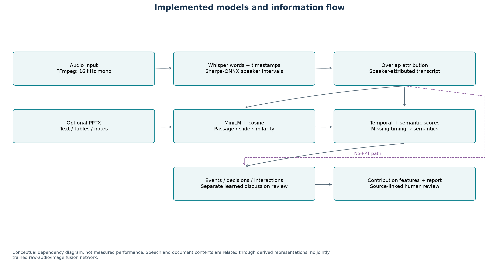
Conceptual dependency diagram, not measured performance. Speech and document contents are related through derived representations; no jointly trained raw-audio/image fusion network.
PNG · SVG · PDF
Sources: config/config.yaml, src/pipeline/orchestrator.py
Which fusion methods have actually been used?
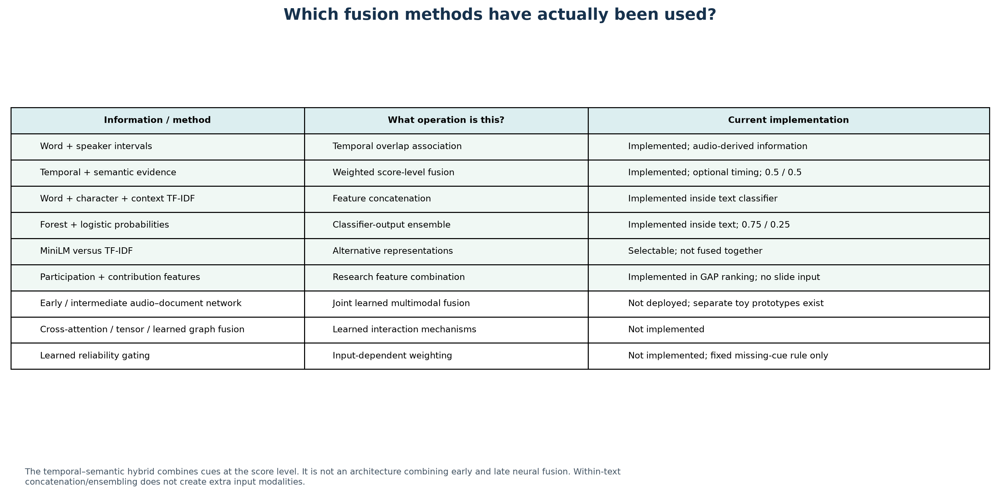
The temporal–semantic hybrid combines cues at the score level. It is not an architecture combining early and late neural fusion. Within-text concatenation/ensembling does not create extra input modalities.
PNG · SVG · PDF
Sources: src/fusion/multimodal_representation.py, src/meeting/discussions.py, config/config.yaml
Controlled fusion diagnostic: semantic-only performs best
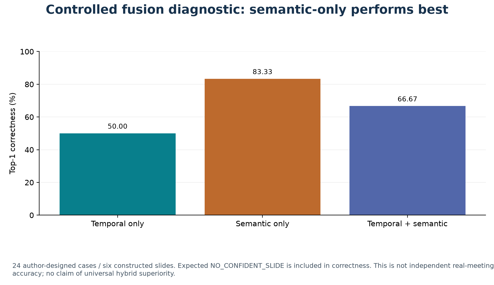
24 author-designed cases / six constructed slides. Expected NO_CONFIDENT_SLIDE is included in correctness. This is not independent real-meeting accuracy; no claim of universal hybrid superiority.
PNG · SVG · PDF
Sources: outputs/evaluation/final_ca4/controlled_comparison.json
Fusion quality and coverage measure different things
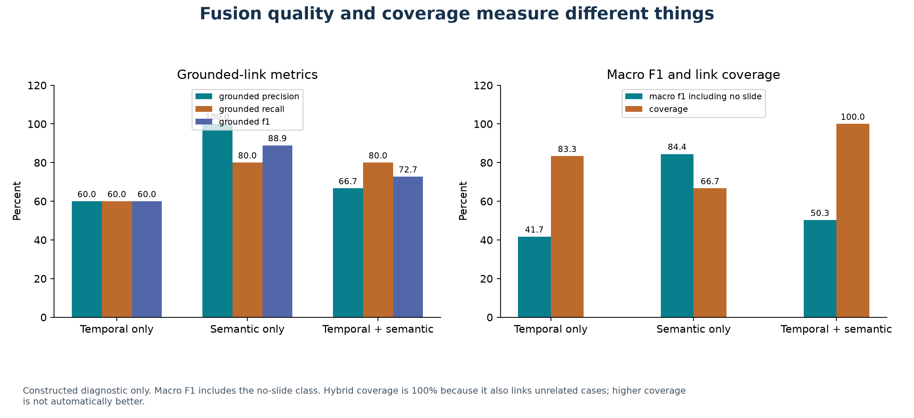
Constructed diagnostic only. Macro F1 includes the no-slide class. Hybrid coverage is 100% because it also links unrelated cases; higher coverage is not automatically better.
PNG · SVG · PDF
Sources: outputs/evaluation/final_ca4/controlled_comparison.json
Where each alignment strategy succeeds and fails
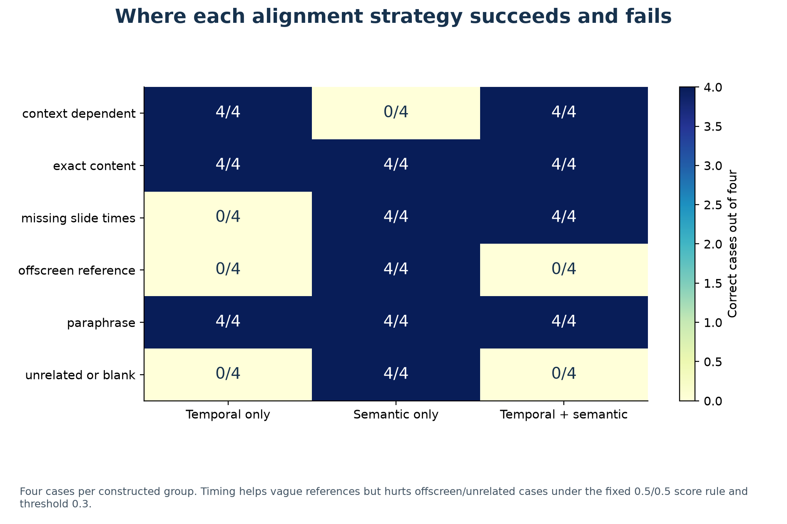
Four cases per constructed group. Timing helps vague references but hurts offscreen/unrelated cases under the fixed 0.5/0.5 score rule and threshold 0.3.
PNG · SVG · PDF
Sources: outputs/evaluation/final_ca4/controlled_comparison.json
Real example: 39 / 1,008 passages linked; accuracy unknown
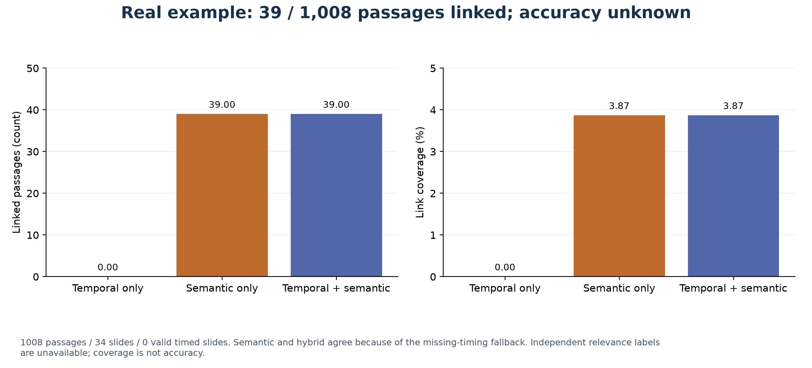
1008 passages / 34 slides / 0 valid timed slides. Semantic and hybrid agree because of the missing-timing fallback. Independent relevance labels are unavailable; coverage is not accuracy.
PNG · SVG · PDF
Sources: outputs/evaluation/final_ca4/real_unlabelled_comparison.json
Discussion review: high recall, limited precision
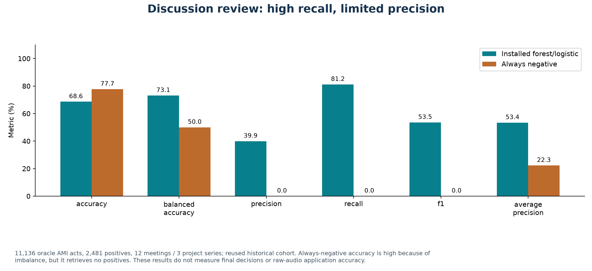
11,136 oracle AMI acts, 2,481 positives, 12 meetings / 3 project series; reused historical cohort. Always-negative accuracy is high because of imbalance, but it retrieves no positives. These results do not measure final decisions or raw-audio application accuracy.
PNG · SVG · PDF
Sources: professor_guidelines/evaluation/quality_scorecard/summary.json
Installed discussion classifier: historical confusion counts
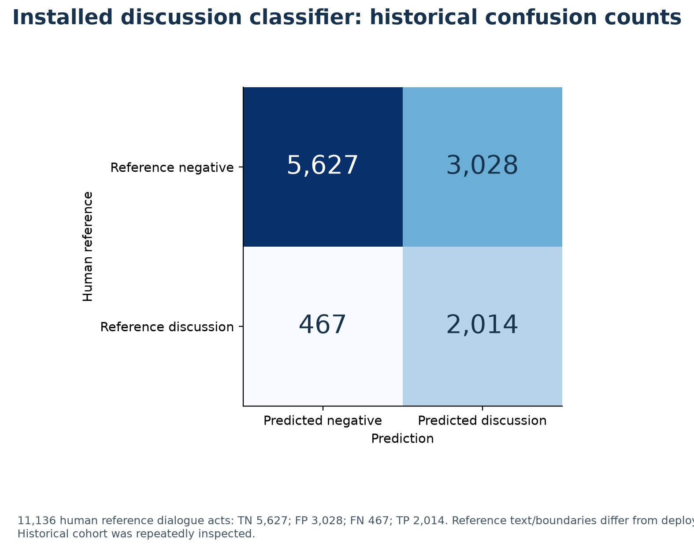
11,136 human reference dialogue acts: TN 5,627; FP 3,028; FN 467; TP 2,014. Reference text/boundaries differ from deployed ASR passages. Historical cohort was repeatedly inspected.
PNG · SVG · PDF
Sources: professor_guidelines/evaluation/quality_scorecard/summary.json
Saved discussion classifiers: local versus context features
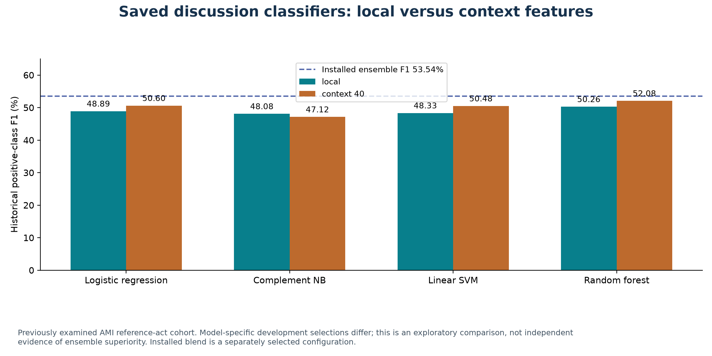
Previously examined AMI reference-act cohort. Model-specific development selections differ; this is an exploratory comparison, not independent evidence of ensemble superiority. Installed blend is a separately selected configuration.
PNG · SVG · PDF
Sources: professor_guidelines/evaluation/classifier_comparison/comparison.csv, professor_guidelines/evaluation/quality_scorecard/summary.json
Speech models: WER across separate small cohorts
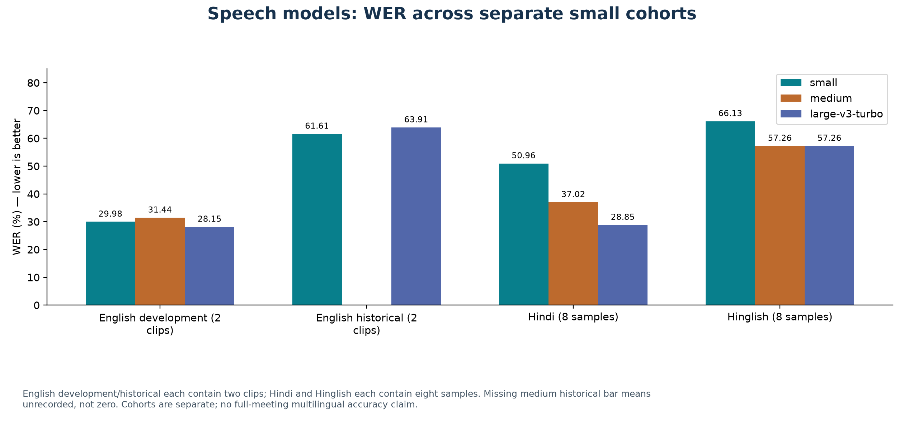
English development/historical each contain two clips; Hindi and Hinglish each contain eight samples. Missing medium historical bar means unrecorded, not zero. Cohorts are separate; no full-meeting multilingual accuracy claim.
PNG · SVG · PDF
Sources: professor_guidelines/evaluation/quality_scorecard/summary.json
Speech models: CER across separate small cohorts
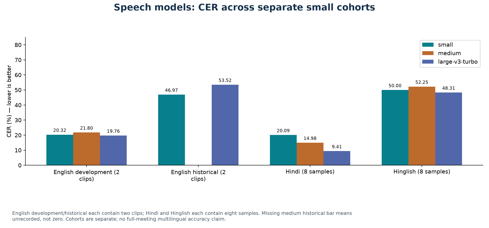
English development/historical each contain two clips; Hindi and Hinglish each contain eight samples. Missing medium historical bar means unrecorded, not zero. Cohorts are separate; no full-meeting multilingual accuracy claim.
PNG · SVG · PDF
Sources: professor_guidelines/evaluation/quality_scorecard/summary.json
Speaker clustering threshold selection
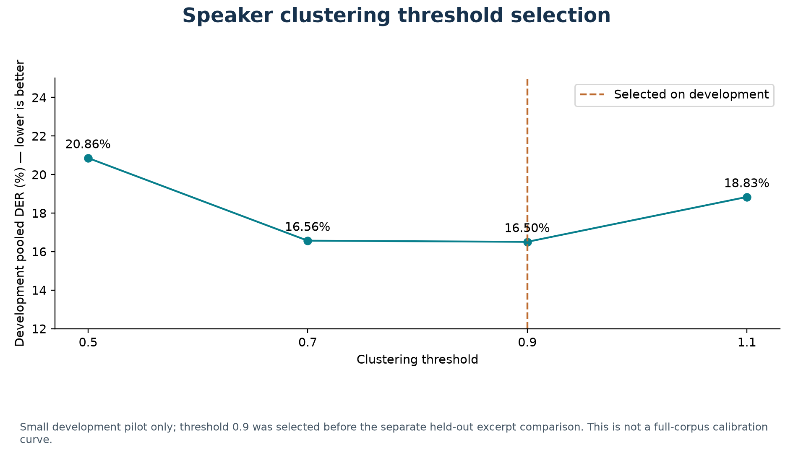
Small development pilot only; threshold 0.9 was selected before the separate held-out excerpt comparison. This is not a full-corpus calibration curve.
PNG · SVG · PDF
Sources: professor_guidelines/evaluation/audio_summary.json
Diarization: two held-out excerpts and pooled errors
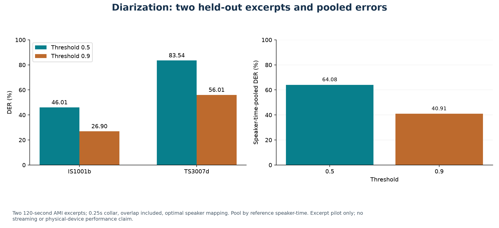
Two 120-second AMI excerpts; 0.25s collar, overlap included, optimal speaker mapping. Pool by reference speaker-time. Excerpt pilot only; no streaming or physical-device performance claim.
PNG · SVG · PDF
Sources: professor_guidelines/evaluation/audio_summary.json, professor_guidelines/evaluation/quality_scorecard/summary.json
Discussion classifier: 75% forest + 25% logistic
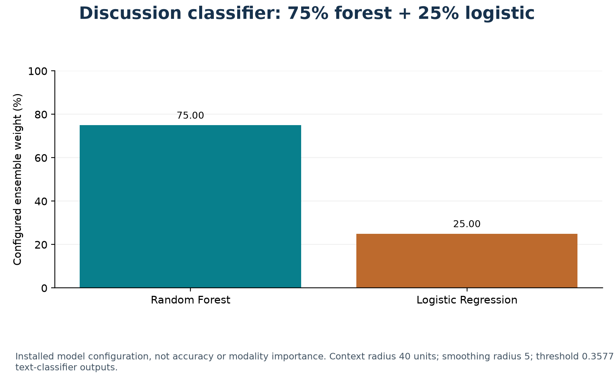
Installed model configuration, not accuracy or modality importance. Context radius 40 units; smoothing radius 5; threshold 0.35774. These combine text-classifier outputs.
PNG · SVG · PDF
Sources: models/discussion/manifest.json, models/discussion/model.joblib
Default contribution-score weights
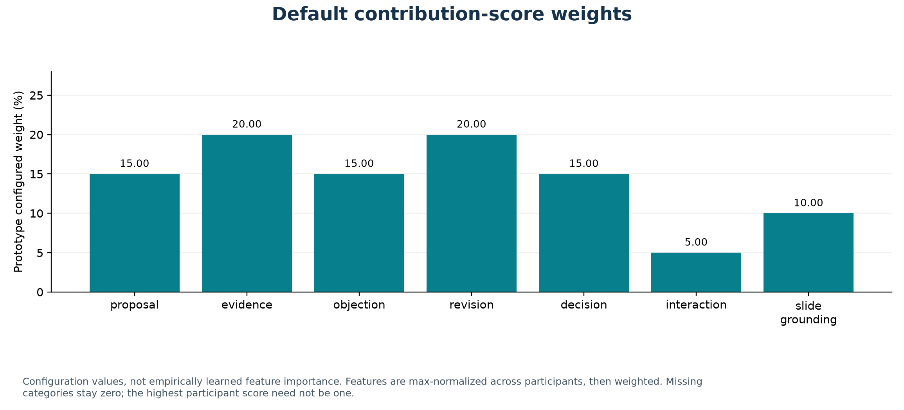
Configuration values, not empirically learned feature importance. Features are max-normalized across participants, then weighted. Missing categories stay zero; the highest participant score need not be one.
PNG · SVG · PDF
Sources: config/config.yaml
GAP research ranking: outcome alignment, not causal influence
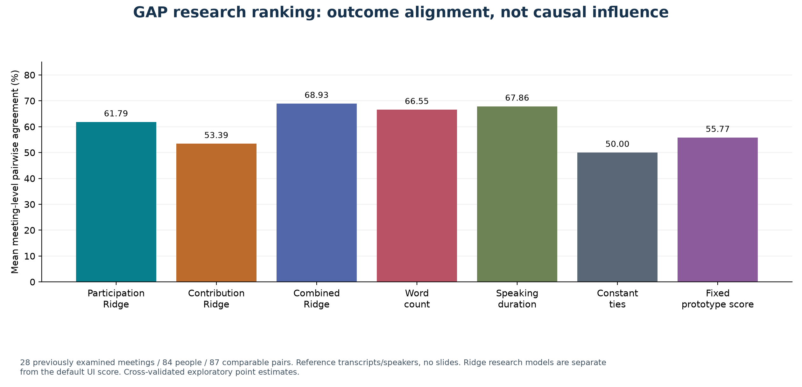
28 previously examined meetings / 84 people / 87 comparable pairs. Reference transcripts/speakers, no slides. Ridge research models are separate from the default UI score. Cross-validated exploratory point estimates.
PNG · SVG · PDF
Sources: docs/paper_20261024/analysis/results.json
Ranking differences: descriptive intervals include zero
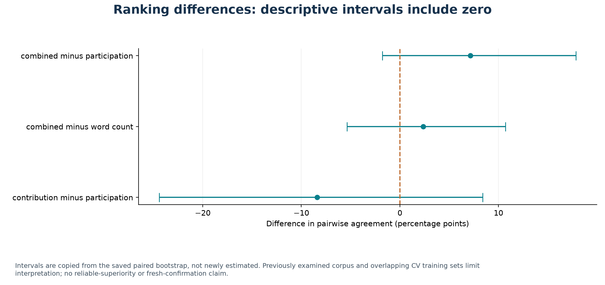
Intervals are copied from the saved paired bootstrap, not newly estimated. Previously examined corpus and overlapping CV training sets limit interpretation; no reliable-superiority or fresh-confirmation claim.
PNG · SVG · PDF
Sources: docs/paper_20261024/analysis/results.json
Historical extraction coverage is sparse
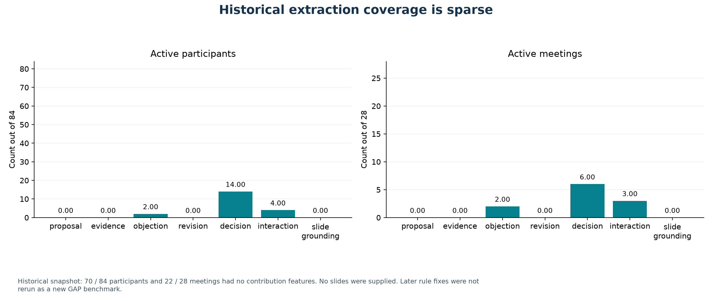
Historical snapshot: 70 / 84 participants and 22 / 28 meetings had no contribution features. No slides were supplied. Later rule fixes were not rerun as a new GAP benchmark.
PNG · SVG · PDF
Sources: docs/paper_20261024/analysis/results.json
Fixed-score deletion diagnostic
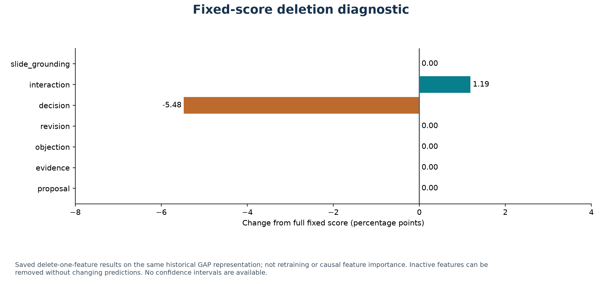
Saved delete-one-feature results on the same historical GAP representation; not retraining or causal feature importance. Inactive features can be removed without changing predictions. No confidence intervals are available.
PNG · SVG · PDF
Sources: docs/paper_20261024/analysis/results.json
Stage timing: 90-second English functional recording
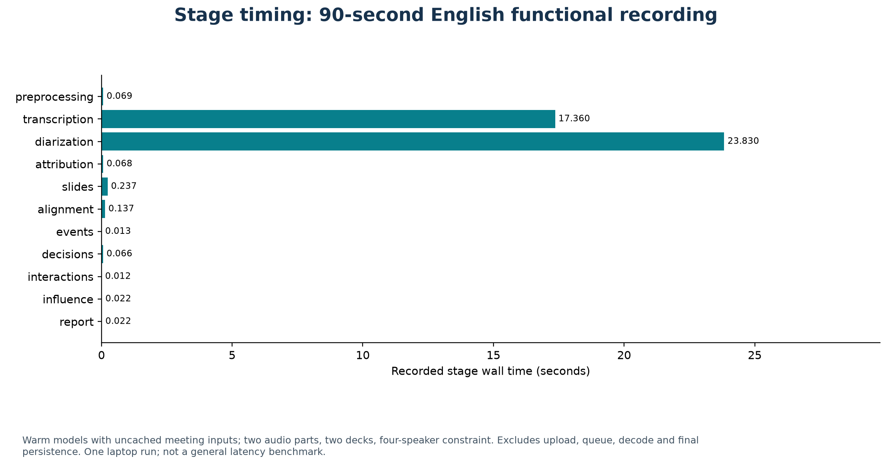
Warm models with uncached meeting inputs; two audio parts, two decks, four-speaker constraint. Excludes upload, queue, decode and final persistence. One laptop run; not a general latency benchmark.
PNG · SVG · PDF
Sources: outputs/evaluation/website_regression_20261025.json
Different runtime conditions must remain separate
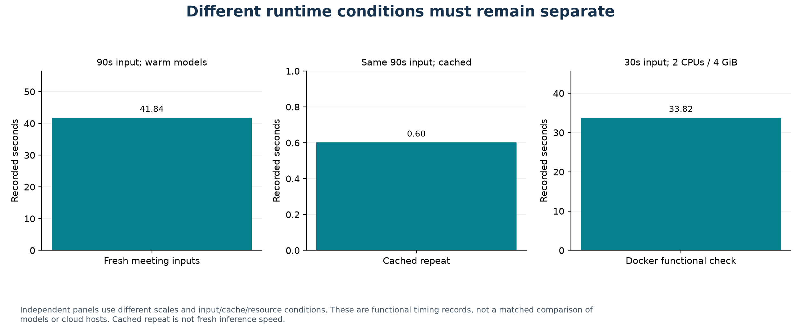
Independent panels use different scales and input/cache/resource conditions. These are functional timing records, not a matched comparison of models or cloud hosts. Cached repeat is not fresh inference speed.
PNG · SVG · PDF
Sources: outputs/evaluation/website_regression_20261025.json, outputs/evaluation/huggingface_backend_20261026.json
AMI discussion subset: meeting split and reference acts
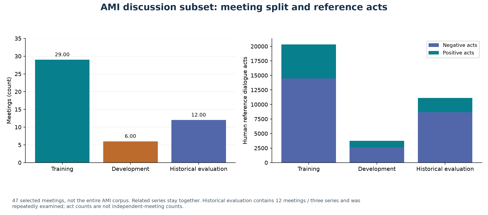
47 selected meetings, not the entire AMI corpus. Related series stay together. Historical evaluation contains 12 meetings / three series and was repeatedly examined; act counts are not independent-meeting counts.
PNG · SVG · PDF
Sources: professor_guidelines/evaluation/decision_discussion/dataset_counts.json
Historical event-role coverage: a known failure finding
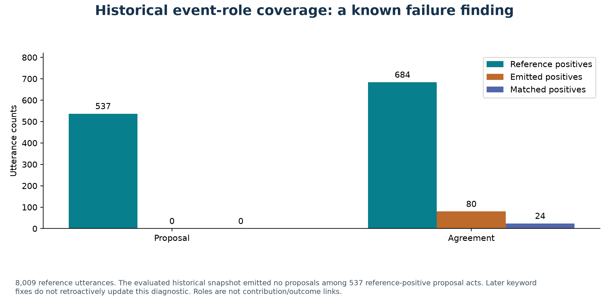
8,009 reference utterances. The evaluated historical snapshot emitted no proposals among 537 reference-positive proposal acts. Later keyword fixes do not retroactively update this diagnostic. Roles are not contribution/outcome links.
PNG · SVG · PDF
Sources: docs/paper_20261024/analysis/results.json
Installed logistic component: strongest signed coefficients
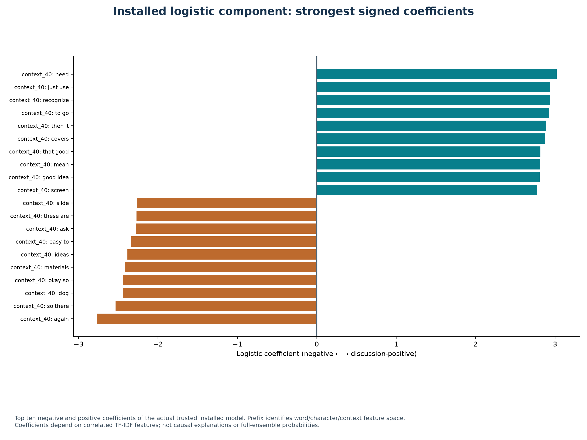
Top ten negative and positive coefficients of the actual trusted installed model. Prefix identifies word/character/context feature space. Coefficients depend on correlated TF-IDF features; not causal explanations or full-ensemble probabilities.
PNG · SVG · PDF
Sources: models/discussion/model.joblib
Installed random forest: top impurity-based feature importances
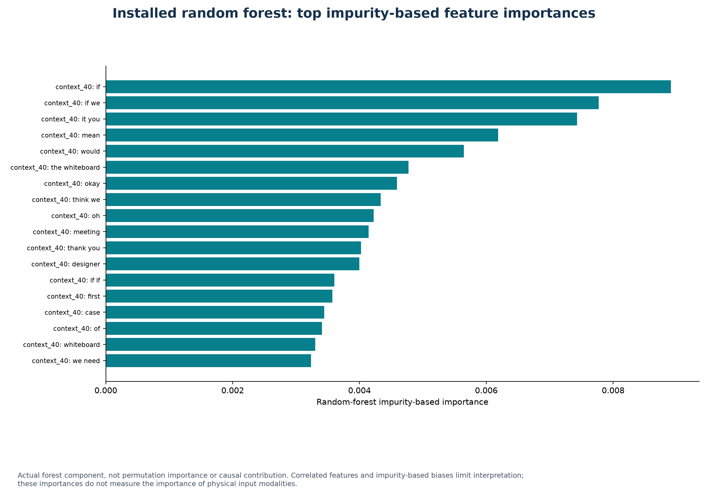
Actual forest component, not permutation importance or causal contribution. Correlated features and impurity-based biases limit interpretation; these importances do not measure the importance of physical input modalities.
PNG · SVG · PDF
Sources: models/discussion/model.joblib
Discussion input: concatenated word, character and context features
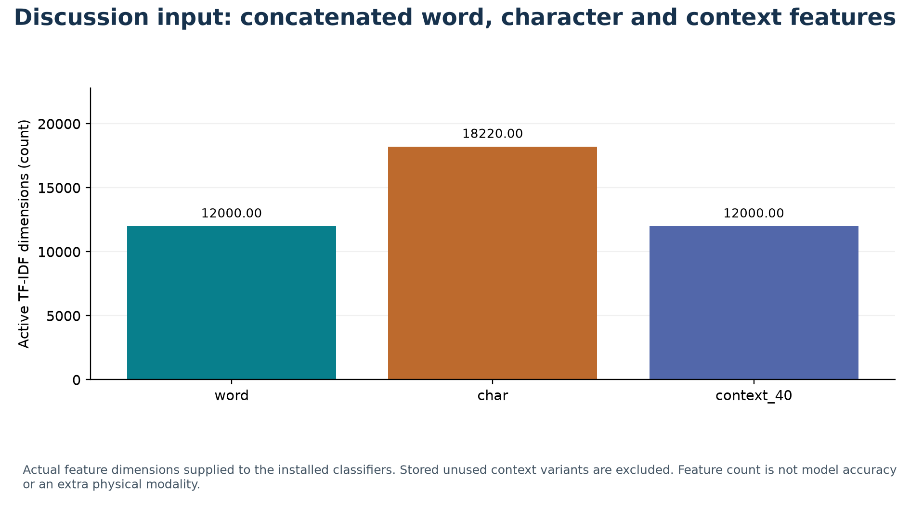
Actual feature dimensions supplied to the installed classifiers. Stored unused context variants are excluded. Feature count is not model accuracy or an extra physical modality.
PNG · SVG · PDF
Sources: models/discussion/model.joblib
Speaker pilot: complementary diagnostic measures
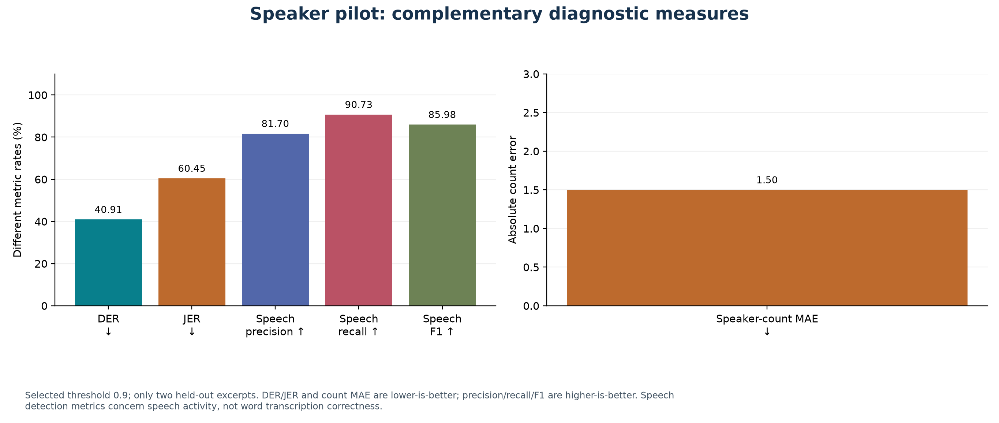
Selected threshold 0.9; only two held-out excerpts. DER/JER and count MAE are lower-is-better; precision/recall/F1 are higher-is-better. Speech detection metrics concern speech activity, not word transcription correctness.
PNG · SVG · PDF
Sources: professor_guidelines/evaluation/quality_scorecard/summary.json
The actual alignment fusion rule and missing-timing fallback
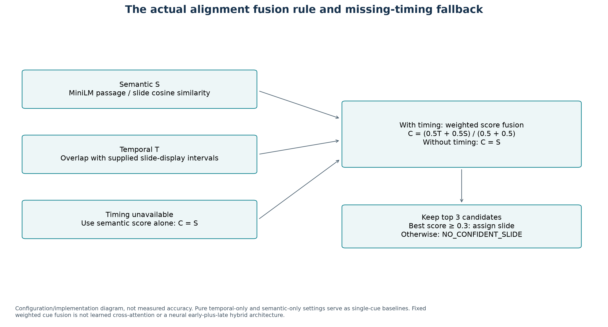
Configuration/implementation diagram, not measured accuracy. Pure temporal-only and semantic-only settings serve as single-cue baselines. Fixed weighted cue fusion is not learned cross-attention or a neural early-plus-late hybrid architecture.
PNG · SVG · PDF
Sources: config/config.yaml, src/fusion/multimodal_representation.py